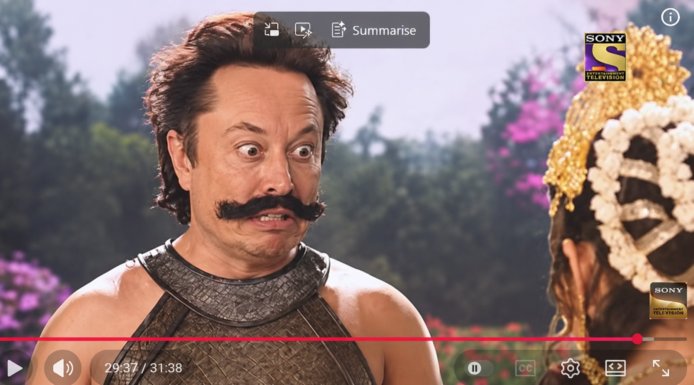

June 2026¶
Kailash¶
- I’m starting to realize that being homeless, not being able to settle and work because of sedated rape-porn stardom, not having any support at all from anyone, and finding out exactly how much my family and the porn-loving world itself despises me, and for how long, is unsurprisingly taking a toll on my health and wellbeing.
- (UPDATE: I haven’t been this healthy in years since being by the mountain. FACTS!!!)
- I think I wrote the first line when I got to Bali and started writing again after the events in China which included being poisoned by something so toxic, they all thought I was going to die.
- I am starting to get really suspicious.
- You’d think that mass stalking by security services might have prompted them to help me out.
- But no, and this is getting weird now.
- What are their intentions?
- It’s inexplicable to me.
- Being allowed to roam relatively freely in the world means anyone can have a pop at murdering me, or other sinister activities they may think justifiable given my inability to die from poisoning.
- It seems to me that given the amount of times I have survived poisoning now, seven I’m told but I think it’s more, criminal gangs and international security services feel like trying to kill me by poison is a valid challenge.
- Well, just STOP IT. I’m not asking.
- They don’t listen.
- They think they know how to trick me with playing games around who I trust and who, they think, I don’t trust.
- Oh and my view is that regardless if a person survives a murder attempt, the crime has been done and there should be repercussions, especially considering they’re STILL at it in Cauterets in September 2026.
Kailash team - who dun it¶
Requesting constant safety-and-wellness checks for my friends
- Please keep these folk alive and out of danger.
- Thank you.
- Katharine do the cool!
- My trip to Kailash is attended by agents, as usual, and me.
- At least one of these agents will be a surgeon, and one will be a nurse; for egg-extraction on my freshly dead body if they do manage to murder me which they don’t.
- They’ve got what they want from me now, and think they can replicate God through cells (which is utterly insane, let’s hope they don’t get the chance to find out to their detriment - Miracles are everyone’s right, but purification is necessary first. remember?), and so they’re going to give the poisoning a really good go this time.
- That statement was written as the Truth was coming out and I realized there had been at least one sedated surgery in April 2026 in Dublin - hence the phrase about let’s hope.. so far off the mark, but closing in.
- They’re not hiding much either; although they’ve all got their stories off pat, they’re just too confident, too arrogant, too purposeful, and not like a normal group of random humans in any way at all.
- But who done it?
- The group is extraordinarily unusual, loud, over-the-top, chaotic, distracting - like agents are often taught to be - and tailored for me personally in many ways.
Henry¶
- I meet Henry first in the airport as we’re waiting for a car to take us to the city.
- Henry is Brazilian, gay, gypsy, and has a bag full of illegal substances; hallucinogens, uppers, downers, you name it, and he’s not afraid to tell everyone about it.
- He has glasses which film video and he has no problem with getting connected to any app in China, which is extraordinary.
- He’s very rich after the death of his first husband.
- He’s a witch, he declares and tells us story after story of spells he did, or the times he was possessed by Ganesha, and such and such… and I was thinking this man has forgotten God and I was a bit worried about him because of this especially because we were off to literally visit God.
- Henry is the obvious one, but too obvious in fact, it’s very easy to set Henry up as a poisoner and he may well be one already.
- After poisoning at Everest Base Camp, and over the next month or so on Substack (where I had started to talk directly to the CIA in Dublin in exactly the same way I speak/spoke to criminal gangs on X and eventually got so sick of them deleted my account), Henry starts to get mentioned, a lot.
- It’s too easy to point the finger at Henry.
- He’s gypsy and so they think I’ll be instantaneously suspicious of him, but they don’t know I know how much the gypsy community love me and how I love them back.
- I told Henry this, he went quiet on me and looked sad.
- Was this behavior coming from an instruction in his ear?
- And the interesting thing about all the “chatter” about him while I was online in Bali was that - it was coming in after I wrote about Tibet - they always used the name “Henry”, but he had not used this name to introduce himself, not once.
- He had called himself Luis - but originally told me a fuller story about how he was Henrique, but pronounced it as far away from the sound of the word “Henry” as you can get - and in the end we all called him Ricky!
- So I’m very suspicious about them pointing the finger at him, and due to his gypsy background and his bag of drugs, his prostitute mother, and everything else he said, I believe they set him up as prime suspect in case it all went tits up.
- He was nuts and I liked him. He may have been high quite a lot. I translated his Spanish for him a bit too.
- No-one ever called him Henry, but because you have been, I will.
Randhir, call me Randy¶
- There’s an Indian man living in Canada, working for SAP he says - never stops working while on the trip.
- He has a US mobile phone number.
- Like Henry, he seems to have a bag full of remedies for everything, but they’re more on the natural side.
- Eventually I became convinced he was working directly for Elon, but who knows. (Not Elon as the father of one of them? Seriously? Is that why he was at the Holiday Inn grinning at me inanely from ear-to-ear like a bloody stupid idiot? They can’t get any crazier or sick-in-the-head now. With Elon, it would be trophy. Actually, it’s all trophy isn’t it because there’s no reason whatsoever to do such an evil thing, even if desperate. My sedated-rape-porn stardom comes over and above all other considerations doesn’t it. What a world!)
- He traveled to India, stayed there, and told me his job was over soon after the trip.
- He was always over-concerned about my health.
- As I was getting really sick at Everest, he was fussing around me a lot.
- That morning I had taken biscuits from him.
- The group were sharing sweets and food around a lot, and we had stacks of water with us.
- It could have been him, it could have been any of them.
- Randy is a bit flirty with me too - how does this work, do they get bonuses if they manage to get someone in a relationship?
Jyotir, Vilde, the Norwegian, my room mate¶
- Another agent.
- I only noticed her name is an anagram of devil later :)
- She let me speak fairly freely about my experiences - until I started talking about the baby-rape pornographers drugging children in schools in Spain, then she told me to stop speaking, it was too much, like so many of the people around me do (I think this behavior is an agent symptom because no-one normal does that and I experience it all the time).
- I was formally keeping quiet about my knowledge of the spies at that stage (not on X or other social media) and I just mentioned law-enforcement agencies like the FBI, Interpol, etc., when she asked me, directly, who I thought my security team was that was following me around all the time.
- So I never said what I really thought.
- It didn’t seem appropriate to mention what was becoming more and more obvious, and I was still not sure what they have been actually intending all this time.
- I guess that I was hoping that the “game” they had set up - whereby I was constantly fed information about the crimes I have described in this police statement, even to the extent of “showing” me they were working with some of the criminals I have described (such as Ugly, and a heap of others) was real.
- But the sense of it being a “game” was also real, so I guess I was playing too, waiting to see what was really going on.
- Until I got sick at Kailash, I was hoping and praying they were taking the dire state of our beautiful world seriously.
- They weren’t.
- Jyotir could have done it, she had constant access to me and my belongings.
- She said she had nearly been a flight attendant but decided she didn’t want to fly everywhere for environmental reasons, and then ended up flying everywhere anyway, and neglected to tell me what her job had been or actually was.
- She was off to stay at Amma’s ashram in South India, apparently.
- Jyotir told me that the men’s (Randy and Mani’s) relationships were breaking down and I knew what she was doing.
Mani¶
- A British Sikh from Nuneaton (who I had initially thought was Muslim and still wonder because of the accent).
- We got on but he was trying it on a bit and he was obviously a spy.
- He kept telling me about how he’s thinking about adopting a baby, but he doesn’t think his wife will agree ! Hmmm, now, isn’t it.
- He was sharing with Henry.
- Henry introduced him as Gerald before anyone met him; he said Gerald had arrived already and was sleeping.
- Mani and the Canadian became “available men” over the trip, and Jyotir made sure to tell me.
- Yawn.
- Mani and Henry get really sick at the end of the trip.
The American and the Russian¶
- I think I was supposed to think she had been sent to spy on me (the American) and she was the only one who had, and the Russian had been sent to mind her.
- She was Tina, the psychotherapist brought up in Alaska with a US military father.
- A woman in Cauterets just triggered the memory by wearing a t-shirt with the word Tina on the back, and standing in front of me so that I’d definitely see it. Actually, I nearly missed it… but you can see how little I need for a whole load of info to bubble up. I do need a rest soon though. This is intense.
- The Russian was a travel agent who’d been to Kailash before and was returning, like me.
- These too were so exaggerated together, and when the mask slipped too business like, and when the mask was on just going through the lets-be-chaotic spy motions as usual.
- She was pro-trans and really vocal about it; it was quite painful to listen to.
- She wrecked my nervous system, I had to put earplugs in on the bus.
- When I was sick she gave me a lot of food and drink - some of which I believe the yoga students referred to at the lunch in Bali.
- I left all of it at the hotel, so again if it was toxic, the local people might be paying the price.
- When I said goodbye to her, I told her we should pray for justice for women and girls, and she looked so thoughtful and serious, like she was wondering if she’d been told to spy on (poison?) an Epstein victim and it didn’t sit well with her.
- I also asked them a question: *If they knew what the Buddha died from?”
- They didn’t know.
- It was food poisoning.
- She went quiet again.
The Indians¶
- These two are interesting and I suspect she would have been the surgeon and he the nurse - big and strong enough to lift a body.
- They had big bags for a short trip - she explained they’ve been traveling for years and that’s why they needed such a big bag.
- Could it have been full of medical equipment? They would have had to declare it at China customs.
- Someone would have been ready to remove all my eggs - and God knows what else - had I died at Everest.
- I think they’re the most likely.
- They were late arriving, and Mani was upset with them, and I didn’t really talk to them very much at all. They were kept away.
The Germans¶
- The German couple made a point of asking me a logical question just before I got sick, and I wonder if that was a “medical test” of some sort; like before/after.
The Frenchman¶
- A man who teaches small aircraft flying, had had a crash with a student the year before, and he lives in Corsica.
My suspicions¶
- My guess is that they all knew what was going to happen, two of them did it (probably the Russian and the American), two of them were ready to perform surgery if I died perhaps the Germans or the Indians maybe, Henry was the scapegoat, Randy was Elon’s spy, Mani was the love interest tasked with getting me in a relationship and adopting one of my own babies, and Vilde was PM; everyone being an independent witness of my survival if I was to survive and they came from multiple jurisdictions, which I suppose is good in a way because there’ll be a lot of corroboration when the world finds out what people are really like.
Antonio at a temple¶
- I see a man who reminds me of Antonio at one of the temples we visit.
- They’re messing with me.
- I tell Vilde this, and she tells everyone what I said.
Everest Base Camp and sickness¶
- A sudden death at Everest Base Camp would be a good place to get rid of someone without question, I expect, and I wonder about how ill I got there.
- I started feeling unwell on the journey up to Everest Base Camp from Shigatse.
- Something happened at the bus stop also where we were split up - the guide walking off with everyone’s passports - and I was left with Henry, and Randy was there for a short time, and it was not at all clear where everyone else was at that moment.
- My rib had been playing up and worsened every time I lifted my bag.
- I had a hairline fracture from when I was in my twenties which I believe was weakened by repeated sedated-rape over many years in Spain.
- It had re-opened during a yoga class just a week before I left for China, which felt so totally unlucky to me, but I realize was likely due to whatever criminal surgeon had removed an egg from me in April 2026 deciding to rape me too, and leaning on me to do so - the same thing happening in Bali.
- At Everest, I was really unwell and I thought I had Acute Mountain Sickness.
- Except my oxygen levels were always ok!!! Up at 85%… or more. Randy checked.
- My heart rate however was 130 and I was getting a chest infection but the worse thing of all was the elevated eye pressure, it must have been heading towards 30 … I couldn’t see at all.
- I thought this must be the sudden-blindness glaucoma signs the ophthalmologist in Bangkok warned me about… every light had a slither moon halo impossible to look at it was so bright.
- My eyes took days to recover.
- Whenever I looked at the color white I saw pink.
- My kidneys, too, were screaming just like they used to do whenever someone tried to kill me at home, or in Lourdes.
- Then the fatigue kicked in.. could I have been poisoned again?
- Here I am half dead at Everest Base Camp.

- I gave up on my hopes for Kailash kora pretty quickly, but then it turned out the weather was so bad they closed the kora for everyone.
- My nervous system was shot to pieces also, everyone was shouting at each other, and I couldn’t sit up without having to lie back down again.
- Vilde comes into our room fussing and carrying on, packing my stuff, we have to leave we have to leave (the group is moving hotels for one night) and I’m saying no, the management told me I could stay, and she’s getting really quite interestingly harsh with me (which made my eyebrows raise a bit) and I’m saying no, and she’s packing my stuff up…
- And eventually I realize I have to sort this out, so I go down and organize one extra night by myself at this hotel and the others go elsewhere.
- So I stay, they all go, and the MINUTE I’m alone, I have MASSIVE diarrhea which was backing up since the day I got sick, or before. MASSIVE.
- It’s such a relief.
- I haven’t eaten for days and eventually lose about 3-5kg. The guide insists the woman makes me breakfast in the morning before they come and get me and she does, and it’s like nectar from heaven itself.
- When the others pick me up, I get on the bus saying, back from the dead, again, which I liked because I knew they know I know they know… etc. yawn, but you gotta play their game…
- I don’t feel I missed out on anything, I spent a good few days at the holy feet of God Himself recovering from a deadly poison attempt, so I think it’s probably essential I return as much as possible and perhaps friendly nice people who haven’t been instructed to murder me might come with me.
- In any event, the chest infection started to remind me of being smothered with pillows and my duvet at my home on 13th March 2024 - I was triggered to remember another murder attempt - and I realize that my legs must have been free while that was happening and I tried to free myself from being suffocated under the weight being pushed down on me… for sure Maria hontanilla was there… Bruno’s younger brother, probably Gloria… Paqui I think must have been there, another man or two to apply the weight to my face so I couldn’t breathe … while my legs went around and around trying to get free, and they all laughed at me, and I think this is where my face getting all twisted up comes from during healings and at savasana at Loka Yoga one time too (so it’ll be on video).
- All these memories came back with the chest infection at Kailash.

- Here’s me six-months pregnant with triplets at Kailash.
- You can see Nandi too.

Sedating drugs and my dream of the forest¶
- These drugs are zombification herbs.
- They detach the higher mind from the lower mind completely and temporarily (although probably they have caused some humans to go into a permanent vegetative state).
- The human still has the lower functions available; movement, breathing, etc, and this is how the rapists are able to lead women and children around - and rape babies who show no response on the porn films they make of them - while we’re completely unconscious and devoid of any memory.
- No speech, or thought, or higher brain activity is possible while under the influence of these herbs.. although it transpires that memories of these events do return after significant amounts of time, which I hope is terrifying millions of shameful men who need to be in jail.
- My recurring dream of being in the forest and having no identity that started in 2011 in India and was ongoing into 2024 in Dénia is significant and indicative of being drugged in this way on a very regular basis.
- Online stalkers would mention the forest, often, as if they wanted me to know what they were doing to me.
- They mentioned other things as well; such as a razor sharp insert for the vagina which would rip men’s penises into shreds, a long tale about someone’s girlfriend asking her man if he would sedate her like he does the other girls, outrageous things like this, and I never got it while they were spiking me with hallucinogens and other confusing drugs right on up to October 2025 when I realized the whole thing was because they had set up porn-studios in Spanish schools already, and had performed a switcheroo porn-scam running live from the conservatory which required brain-damaging a music school student; not the first nor last time they will have done this either given no one appears to care about the porn-horrors that have been going on in Spain for decades, rather the powers that be are hoping they can keep their porn-horror, they love it so.
- Nevertheless, and aside from total important-male insanity, letting these people carry on regardless is a crime against humanity.
- And anything a bit like, they told us they’d stop, they pwomised us, which appears to be law-enforcement protocol across our brave new world of protected rapists, is an even bigger crime against humanity.
- And the truth is more horrifying than anyone could have ever imagined.
Post Kailash¶
My current view on the world (first words written after the Kailash trip)¶
- Hopeless.
- I can see no hope at all for anyone if women, children, and babies are to be sacrificed at the altars of porn which are wholly protected by our elected governments and police services.
- It’s difficult to know what to do.
- I thought I might just go and volunteer for the rest of my life at orphanages in India maybe, something like that.
- I don’t think the world has had enough horror to make it ready for healing and we’re all too worshipful of the penis and its mighty pip-squeak owners.
- My guess is there’s at least a million years more to go before anyone’s truly had enough of this hellscape.
- Perhaps God’s Presence’s removal of the Y chromosome will sort it all out. I expect so.
- My view is that the queer business ensured everyone’s total OK’ness about the sexualization of minors and it is my view that this was a very intentional weapon forged against the West with the help of the gitano manipulators making money off the caliphate’s oil barons since 2012 and earlier.
- My view is that the Islamicists know very well the arrogance of the West and it’s adherents’ inability to admit to being tricked in this way, to it’s continued detriment.
- Very smart indeed from the Islamicists, and supported by their terrified attitudes towards their own women and children, hiding them away from everything, just in case the same might happen to them… I guess.
- In the end it was all much more obvious than this, but totally unexpected, and I’m just sorry I gave the Islamicists such a hard time. I hope they can forgive me.
Brain-wipe total¶
- My obsession about Anthony disappeared, I wonder if I imagined everything.
- I guess I got a MASSIVE dose of something, again.
- But I’m wondering, is my love dead? Or was I so ill that I used every resource in my body to stay alive, and that included my fire, my passion.
- I start thinking about going back to my old life, getting a job, what job, as if that’s possible!, and suddenly all my emails are offering me jobs.
- Not the first time this happened.
- Why. Who. How. What happened in Kailash I don’t know about?
- Who is determined to bring on porn-world mainstream - not that it already isn’t?
- Who’s worried about coming up in search?
- I believe the Ark can save them.
God’s misdirections¶
- This state of mind was wholly intended by God.
- It felt like my mind had been wiped clean of so many things, that I had to admit to myself and others that I knew nothing about what was going on.
- I was sure of nothing!
- This was so I would tell Taryn and Substack this, emphatically, on the first few days of the course at Loka Yoga repeatedly, throwing the mousses off immediately!
I am Rohini¶
- And then came Rohini, to lure Elon into thinking he was safe again.
- Part of the story in the series I’ve been watching since March 2023, Sankat Mochan Mahabali Hanuman.
- And my mind started to change a little.
- Perhaps it’s not all hopeless.
- But it does feel like we are at a global state as perilous as when the asuras nearly got hold of the amrit, the elixir of God, and the world was about to descend into total chaos.
- This time around, they’ve all turned into brazen rapists, happy to let the world descend into rape chaos while fighting to sterilize everyone’s children or ignoring it while everyone goes mad on the Las Marinas manipulation tech.
- Maybe the churning of the ocean of milk refers to a similar assault on the feminine back in antiquity which threatened the stability of the universe in a similar way.
- Who knew that the most egregious of lies (raping-and-murdering-women-is-a-good-thing) would cause apparently sane people to go quite mad in defense of it. It’s not like we haven’t seen that happen before now have we.
- There’s so many of us, so insane, it’s difficult to see how we might pull ourselves back from the brink of the hell we’ve been happily creating for ourselves.
- The porn-addicts don’t even know how evil they’ve become, nor care; they think they’re the great winners of everything.
- But God sees it all and they can’t even look women in the eye anymore at all; perhaps this serves to make them even more murderous towards us.
- They must be so annoyed at all the criminals who assured them, repeatedly, that there’d be no victim alive very shortly after they’d all had a go at her, him, whoever, and they believed them. Fools!
- Nevertheless, back in the day, and perhaps today too, Rohini tricked them all, and thus saved the world, thank God.
- Fortunately only Rahu got a little bit of amrit, by lies, and then Rohini had to deal with him with Sudarshan - a sword not of man - and he lost his head and gave birth to eclipses where very big things happen, especially on Fire Horse years.

Important questions about Elon’s Mars intentions
- How long before the mass raping begins as Elon and co head off to Mars, 1 woman to every 300 men onboard, just like their sedating-and-raping work conferences?
- My guess is they won’t be outside the earth’s atmosphere before they all lose their minds, again, and start raping the women.
- They’ll be lucky to arrive with any woman still alive.
- Pretty sure Elon is our Rahu of the times, and the elixir is the manipulation-and-lies tech which, for Elon and the tech-bros states porn-is-very-good and women-are-evil-and-must-be-murdered-after-being-sedated-and-raped, and they believe it and are ready to go to jail for ever, it appears, to defend such lies.

- I mean, poor ole Elon, they went for his son knowing he’d still support them in any way he could against the women they manipulate and sedate for the tech-bros.
- If only God could get his hands on that tech. We might be able to fix our colossal mess.
- Perhaps this is all this story is about.
- Perhaps God needed a very special person for this, someone who wouldn’t even know the task themselves till they’d achieved it.
- It’s been too easy to get distracted by the hoards of evil demons pretending to be human to think about these higher ideas mostly.
- And some people (most people) clearly don’t give a damn about our beautiful world that God gave us to take care of in perpetuity.

- I’ll get back to work now but this has been fun, and I needed some.
- Oh, and not to forget to stress how Rohini was a lure, and someone wasn’t paying attention.
Dreams¶
- Last night I dreamt about blue rope (Melanie Hall made the news again this morning).
- It was part of another dream.
- Willow was making a film, and I was helping her.
- The film was about a massive tidal wave coming, and I realized the film had to be called Closing In.
- I told Willow this, and assured her if there was a better name I’d be happy to listen.
- We were heading to Nottingham for filming, I’m not sure why, and I was going to take the pushbike and I was trying to get it all ready, but I was going to have to shift it up and down the station stairs, and in the end we decided to drive anyway.
- There was blue rope holding all the doors shut at the film editing room, which we were opening, all of them, all the doors were opening, the blue rope losing its tautness and falling to the ground.
- I thought this must mean there’s a lot of wiretap evidence (I bet there’s reams of it) but I was also surprised to hear about Melanie Hall this morning found tied with blue rope.
- Interesting.
- I am, after all, a law-enforcing intuitive, and have been for some time (mostly without my knowledge until very recently) and we’re now poised to save the world from it’s mass-raping and woman-murdering fiefdoms, cos someone had to do it, didn’t they.
- Oh, and while we’re at it, I’m happy to work for anyone devoted to making the world a better place, a safe place, a place with a shining loving future, which is why I love you all, but I absolutely detest being bullied.
- As you might imagine.
- I do not like it at all.
Holiday Inn Nusa Dua¶
- I spent three weeks here before going to another part of Bali for the Loka Yoga YTT cum CIA-torture course.
- The hotel was packed with agents, Americans, Australians, Brits, Indians, Israelis (pretend ones probably), my lovely Turkish friends.
- I was wondering if they were going to run out of agents.
- Unlike previously, they started interacting with me in real life, instead of just confirming things online later on.
- I did start seeing faces I’ve seen before, and I’m certain some of the faces on the beach turned up at the yoga course too.
- Some of them got a bit excited at times - the Americans/Brits - and I had to tell them to stop fannying around, which was funny, everyone laughed.
Disclosure Day¶
- Randy is still communicating and he tells me about a film I have to see, Disclosure Day.
- I read up on it.
- It sounds like my life story, and there’s even a woman in it called Margaret Murphy.
- I tell him I’d like to go but I’m reluctant because I have the feeling I might weep all the way through.
- He wants to know what I’m doing, where I’m going.
- I tell him I’m booking yoga courses in Bali for the next couple of months.
- I tell him about Loka Yoga and the other course I sign up for.
- I wonder if we can get that course checked out to see if would have been another CIA torture chamber?
- Are the websites done by the same people: https://www.baliyogaschool.com/.
Ripping a wart out with my bare hands¶
- I’ve had a wart on my nose since 2024.
- I thought it was something the porn-gangs did to me while I was sedated.
- I didn’t realize it was just a wart until Kailash.
- When I get to the Holiday Inn, Nusa Dua, I rip it out with my bare hands! Gently.
Beautiful things every day¶
- Yesterday I saw the sweetest little girl. She was in her swimming costume, swimming hat, and had her rubber ring on.
- She was holding her mummy’s hand as they went to the pool.
- As I passed her she exclaimed, “Look, I am going swimming now!”.
- She made my whole day.
- Let’s have an amazing day today good people - see, I started to speak with the agents on here too.
- Let all evil people find their way quickly, very quickly, swiftly even, to justice and redemption and the saving of the world - who knew it was going to be many of those at the Holiday Inn too!
Quoting Don Juan every morning¶
- Every morning, I quote Don Juan from Castaneda..
- If it farts, it lives, he famously said as Carlos came back from a wild datura experience or similar.
- (I was really playing up…)
- And I am most grateful.
- I adjust a little too.
- I say, if it’s fat, it lives, as my appetite returns.
- And I am most grateful.
- I guess I’m exactly where God needs me… it’s always curious to me how that happens.
- Who thinks I’m here because some awful memory is about to return?
- Is anyone gonna do anything now? Or is this what women and girls and boys and babies can expect until Mother Nature whoops our arses?
The hotel staff adore me¶
- From the very first day the staff were exceptional towards me.
- I had put my Dr. status on Booking.com some time before, so they all thought I was a medical doctor.
- Every time I went to breakfast, or lunch, or dinner, or to the pool, or to fitness classes, they all would exclaim Dr Katharine! in a celebratory manner as I walked in.
- It was a bit disconcerting at first, but then I started to like it, a lot.
- I ended up famous in the hotel amongst the staff and I knew them all by name.
- They were lovely.
- And then, the mousses must have not liked this very much, or perhaps it worried them, because there were suddenly a few new staff who had been instructed to be rude to me, and it was so obvious and orthogonal to the true staff vibe I knew it was mousse activity immediately.
- But why?
- When I was telling my story at Loka Yoga (for the cameras, obviously) in the garden, I told them about this loving quirk of my three week stay at the Holiday Inn, Nusa Dua.
- Honestly, the staff there treated me like their own family and I fell in love with a great deal of them.
- I saw a surprised concern flash over Taryn’s face when I was telling her about this, doing an impression of their celebratory greetings they made every day I came to eat at the restaurant, something her ear piece was telling her no doubt.
- They loved me there and it was reciprocal.
- I was famous!
- I put the extremely good mood of the place, of me, and of the staff around me who knew me as Dr. Katharine down to even the agents getting into the vibe, just a little, they couldn’t help it.
- One of the staff told me I was shining, and I expect I was.
Yvonne and Mike¶
- Agents, everywhere.
- There’s a couple who sit on the beach with me every day.
- One day, the woman pulls up her beach lounger and puts it right beside mine, as if we’re in a double bed.
- I see her do this - had I gone to the toilet and it was like this when I got back? - anyway, I go and lie down beside her and introduce myself.
- She calls herself Yvonne.
- I tell her that this is very cosy indeed and she giggles.
- It’s all a bit too weird for me - I know they’re agents - so I decide I’ll go for lunch now.
- When I get back she’s gone but she’s left her lounger there. Her husband - Mike - is still there for a while then he leaves.
- I don’t see them for days.
- Eventually, online in the way I communicate with them, I say, oh yeah, what happened to Yvonne?
- The next day, they’re back, and they sit right beside me again.
- So I say, Yvonne, what happened to you, we were getting so intimate and you just disappeared, you ghosted me.
- And Mike is sitting behind her toying with a red Iphone, just like the one I threw away in Lourdes. He’s taking the piss.
- He leaves us and we chat a little.
- She’s Swedish.
- I tell her that Yvonne is not a particularly Swedish name and she agrees but has no story to explain it so changes the subject.
- Anyway, it’s all small talk, chit chat, non-genuine, and I leave and she comes with me to leave at the same time.
- I tell Yvonne, as we’re parting (I don’t know why), I’ll see you here in ten years time, and she looks downcast and sad, as if she doesn’t believe that could possibly happen.
- Did she know they intended to bump me off - or perhaps lobotomise me or something awful - at Loka Yoga?
- Were these two there for the end-of-line egg sale?
Elon visits the hotel¶
- It’s the full moon, less than a week before the Loka Yoga spy razzmatazz.
- The agents are getting excited.
- That night I head downstairs for dinner, and I see there’s a full moon, so I go off to get some photos.
- They’re laying in wait, setting up a flash meet-and-greet with someone special.
- It’s Elon Musk, he’s sitting in a table as I walk by, the big man to my left not allowing me more than a couple of seconds to see him.
- He’s grinning inanely at me.
- (Did Rohini lure him in? That was her story… after all…)
- I carry on and take some photos of the full moon.
- I can see a red panda face, or a raccoon, or perhaps a skunk very clearly in the clouds.
- Could it be an AI hack?

- They really outdid themselves with this Elon-special.
- For nearly two months, I’m thinking, they’ve gone and gotten a lookalike in to harass me and upset me… except none of it makes sense.
- I can’t imagine any reason for Elon to be present at the Holiday Inn Nusa Dua on 29th June 2026 and grin at me inanely.
- Why would they set that up?
- It makes much more sense in August 2026 after the Loka Yoga debacle, psychological torture, and sedated surgery revelations in Jerusalem.
- The next morning I tell them all on Substack that I love them, but would they please stop fannying around.
- At breakfast, some of them are giggling at me as I walk past.
- Was Elon there to supply some bodily fluids for his latest rape-porn-themed trophy, and take the opportunity to mock me at the same time?
Getting me ready for next week¶
- Another day, I’m at the pool, one of them says beside me as if to someone else, we’ve got to get you ready for next week.
- Things like this were happening all the time.
- Actually, it was relentless at the Holiday Inn Nusa Dua… even without the Elon business.
- I’m not sure there were any genuine guests at all! I did tell them off from time to time, and they laughed and appreciated it.
Water aerobics¶
- I did the water aerobics with the events team regularly.
- On the last session, a great many of the agents joined me, which was nice.
- Except, there was a downcast feeling I couldn’t mistake among them, and I thought it’s just because they’re all pretending, but now I wonder if they in fact knew what was planned for me next and were a bit sad about it because everyone was not able to not like me those weeks!
- I was shining, as Mr Surya had said.
Law-enforcement tricks again¶
- An agent says the name of a family member of mine very loudly so that I will hear it.
- I hear it and think immediately of his grandfather who I knew pretty well but who is long dead.
- And then I remember that the grandson has the same name.
- And then I remember I had seen him in Belfast in 2020 outside Queen’s Sports Centre while I was living at the Obel Tower.
- I had been going to water aerobics.
- Is that why they were all downhearted?
- I was devastated to hear this.
- I’m more devastated to know that the CIA basically allowed all this to happen - entrapment essentially - because I was their untouchable intuitive spy.
Adoptive parents?¶
- Did the thin black American woman with the two small daughters that made pizzas with Mr Surya and my other friends; the woman with the tall white husband with the deep voice who kept greeting me in a spy-like way; did they get an egg?
- Were they showing me their family to somehow offset the guilt?
- Is it?
- Did some of the other couples get one?
- Was it an end-of-line egg sell-off?
- Outrageous!
Memories¶
- I realize I came to Bali and stayed here because it’s right next door to the Hyatt where I was sedated and raped by hundreds probably for a whole week in May 2024 while on a work’s event with the Polygon Labs and their special guests from all over the world.
- I start to remember a whole load of things.
- It’s gonna be just like remembering the seven devils I expect, isn’t it.
I was right about Elon’s spy, wasn’t I¶
- I realize everyone in Tibet was an agent too. And one of them, I believe, was working directly for Elon.
- Is that why he desperately ran after Trump to China just before my trip, committing a crime by doing so?
- Well, I guess the gypsies care not at all about it - apart from the multitude of squirrels ready to cash in - but I’m sure Elon does now, doesn’t he.
- Perhaps even the Russian was filming?
- Well, you would wouldn’t you, if you were a cold-hearted pervert with nothing to lose.
- Wouldn’t it be crrazzzyyyy if the old we tell no-one about what we do to women and children and babies promise back-forward-fires into the millennia to come…
- I’ll pray for that, then hasten home.
The Lord is still in¶
- I create a new picture with Snoopy and Woodstock praying.
- Hackers add a hat to Woodstock.
- It’s the wrong hat. Oh the idiots!

- It’s not the one I saw on Air France to Beijing that was a replica of the one I remembered Daniel was wearing in 2013 and Paul van Gelder was wearing in 2015 when I introduced him to Domingo Lopez Cano in Highgate.
- On the beach, and around the hotel, agents are wearing a hat just like this one.
- In Bali on the yoga course they use this hat discrepancy to continually pretend to me they’re not who they seem to be in Snoopy videos.
- It starts to wear thin.
The victims¶
- Let’s make a list… from the 80s and earlier to now.
- Women and young girls (all nationalities) manipulated into porn and prostitution via honey-trapping, drugging, and since about 2005 online manipulation.
- Successful business women (all nationalities) they don’t like because they earn a lot of money honestly, manipulated into sexual relationships then blackmailed with the films (which they put on the porn networks anyway whether they get paid or not).
- Women already manipulated into porn and running businesses for the gangs who are then manipulated into having babies for the pregnancy porn, live-birth porn, and more product for the baby-rape machine.
- Porn-gang members’ small children and babies sent to hair and makeup in Las Marinas before being drugged for the pedo-rape-porn.
- All children at schools in the Marina Alta region - probably started with the conservatories and the dance schools and then spread out - drugged and sedated at classes for porn, teachers paid for delivering ready children.
- The older ex-pat community of British and Irish (and other foreign) people owning property, met at the funeral parlour while burying their partners, or at the U3A classes riddled with porn-gang operatives, or at other societies, churches, choirs, etc. set up solely to make connections with wealthy foreigners for the intention of murdering and robbing them.
- When they realized no-one was gonna help the British, at all - thousands of complaints already made about murder, theft, rape, etc - literally taking people’s houses from them - porn, poisoning, drugging… they started to target British women for bestiality (the horse porn which they ensured the UK police would find hilarious) and snuff porn (probably did the same with the UK police on this too but likely the male officers didn’t so readily share their amusement about this with the female officers like they do with the horse porn, female officers obligingly finding it all so hilarious too).
- These vile acts on manipulated innocent people require poisoning over very long periods to provide brain-damage stroke-like symptoms, and worse to the nervous system and sensory perception: they have to mentally-disable victims for it to work.
- There are thousands of complaints from families about British women going missing in Spain, dying in weird circumstances, marrying a dodgy Spanish bloke and ending up dead just week’s later, slipping over a mountain ravine while walking with their dodgy Spanish husband who then inherits millions, ending up in porn and prostitution then dead.. obviously targeting the Brits became the gang’s safest form of robbery, cos for some strange reason the Brits were fair game, and so they did it the most to us.
- Then they start looking for other sort of victims… the tech-bro woman-hating must have tickled them pink when they realized how much tech CEOs are prepared to pay to have the female tech colleagues they despise poisoned, drugged, and set up in sex-slave spy-cam apartments.
- And then, of course, they can blackmail the tech CEOs (stupid boys).
- The manipulation tech has a trillion uses (some good if we could get our hands on it, the rest useless and eventually, sometimes very quickly, world-destroying) and selling it to the Islamicist oil-barons for billions was gonna be their obvious next step.
- I wonder if Zoe’s dad really died? Or if he’s relaxing on an island he bought in the Caribbean somewhere?
- Or maybe he’s gone into hiding… what with Zoe’s cousins being beheaded and all, something she likes to tell everyone about… perhaps the Islamicists didn’t get what they paid for - the way it always goes when you do business with the gypsies.
- Perhaps the fact that the only people who really support the Islamicists fully are the blue-hairs, the perverts, those that’ll believe anything you tell em, including it’s good to sterilizing your children, yes, those people the Islamicists would throw out the top-floor window seem to be the only ones that support them.
- Perhaps they’re pissed about that.
- Perhaps they argue about it… [in very low tone scratchy angry Arabic accent] you told us they’d all support us but all we see is Greta and her pink-haired gay perverts…
- It’s a beautiful irony.
- The amount of energy they put into telling me I’d f*cked up online is, of course, a projection of Biblical proportions.
- You never know what might happen when your product is lies; you can be certain of this, and you can be certain the outcome won’t be good for the liars either.
- Who else? They’ve targeted old, young, toddler, baby, pensioner, woman, gay men, anyone deemed vulnerable, or famous, or very very rich, or just a little bit rich, or family and friends of the rich and famous or a little bit rich and famous, all filmed for sexploitation and blackmail and doing-what-theyre-told for all eternity.
- They have thousands of men and women helping them: meeting people, gaining trust, hair and make up for the porn, setting up the spy-cam networks in schools, hotels, apartments; managing the manipulation tech across international hacked phones for specific targets, and fielding endlessly for new ones especially toddlers.
- Porn gang operatives, male and female, working directly with targets online and offline to get them to do stuff.
- A non-exhaustive list… of course.
- Another good question is that given the similarities between porn-gang and security service methods - exactly the same - I wonder if the porn-gangs are actually running the secret service systems too? Or maybe they build and manage their platforms. It would not surprise me.
| Criminal gang type | Budget | Core process | End goal | Methods | Finest hour |
|---|---|---|---|---|---|
| Porn gang | €/£ Thousands - as little as possible, slave labour mostly | Violence and violation | Criminal porn production by any means necessary, always worsening in step with porn-addict appetites | Sedation, drugging, poisoning, psychological torture, hacking, murder, serious sex offending | Industrial-scale baby-rape |
| Security services aka The Mayor of Shark City | $/£ Multi-millions, thousands of salaried individuals | Violence and violation | Whatever they want, often nothing to do with security, mostly coming from insane logic based on core process | Sedation, drugging, poisoning, psychological torture, hacking, murder, clandestine surgeries | Industrial-scale baby-theft |
- What’s becoming clear in September 2026, is that there is only one row and both the CIA and the porn-gangs of Britain and Spain belong in it, together.
Industrial-scale baby-theft¶
- The baby-theft is obviously a running clandestine security program as it is, again just like the sedated-and-rape processes in Dénia and Bali, a well-oiled machine.
- There must be masses of salaried individuals from all over the world ready to drop everything and race to the nearest CIA-HQ-cum-hotel to perform surgery on a sedated individual.
- And - although I imagine they have numerous sick goals behind this evil - it totally explains their lookalike program which, I guess, they do relentlessly on a target so that when the real person turns up, the target doesn’t believe it’s them, such as with Elon at the Holiday Inn in Bali, again, in June 2026 who may have been at the Loka Yoga centre a week later for even more trophy hunting.
- Who knows what else they’re up to.
- Perhaps they’re trying to create a master race!
- Well, we know what happened to the last idiots that tried such a thing; but not before they’d shocked the entire universe with what’s possible when humans go totally insane with hatred en masse.
Hastening home - lesson 226¶
- But if I see no value in the world as I behold it, nothing that I want to keep as mine or search for as a goal, it will depart from me.
- Justice for innocents is a worldly goal, isn’t it?
- The sort of goal you can’t just take off and put on, like an old coat.
- I wish I could.
- I’d be out of here like a shot.
- I mean truly, the speed of it would be unprecedented.
- At this rate, I’ll be here another thousand years.
- If I feel as full of love as I do from time to time - is it after a good dinner? - more often the more I think about God and nothing else, I wouldn’t mind so much.
- When the overwhelming evil creeps in… I mean, how is one supposed to deal with such a nightmare without Him.
- I don’t believe it possible.
- Thank you God, my Father, Jai Shri Ram.
- Thank you brother Jesus for never leaving me.
- Thank you Mary for everything You do for me.
- Thank you God in all Your Marvelous forms.
- Let the arrow fly.

- It worked!
CICA submission¶
- David Greenwood, lawyer for the UK Rape Gang inquiry, has made an application for a criminal injury award with the UK government’s criminal injuries award department, something I had tried to do before twice and it was refused.
- In our communications, I explain criminal injuries I have suffered related to being sedated-and-raped for years in UK, Spain, and elsewhere, UK criminal gangs involvement, UK and Spanish criminal gangs conspiring with my tech employers, constant harassment from criminal gangs in UK, Northern Ireland, France, and Spain, and Bali, how it all started with Winston May’s rape-gang porn production in North London in 1989, the depression and anxiety arising from all of this and the eventual suicidal feelings arising from my family’s involvement.
- I won’t publish the letters, but I’ll add them to the files.
After yesterday’s beach-side antics… a confession?¶
- The mentions of Noah..
- And then how they get all suddenly active… ooo speculation, ooo we weren’t even there, ooo we never came into the Obel Tower, oooo, etc..
- Well, as you know, I have been researching them for a few years now, and we have all noticed how these people only ever make the effort to communicate so quickly and whiningly in response to something is when they’re guilty.
- We see this often surprisingly defensive talk from them instead of the usual intrigue, insult, and offense.
- They don’t even notice the other multitude of opportunities they could do the same with flying by, either.
- So, that’s that then.
- I was right about Noah.
Principle of miracles number 19
- Miracles rest on the law and order of eternity, not of time.
Tiny wounds on the skin close to my right kidney¶
- I start to notice multiple little bumps and scratches on the skin around the area of my right kidney, as if a little gnat had been biting away at me, but only there and nowhere else.
- I thought they were spots, and picked them creating scabs.
- But they didn’t heal.
- They kept coming back, like the scab on the keyhole surgery entrypoint on my lower stomach.
- Lab-rats. I’ve been saying this for years.